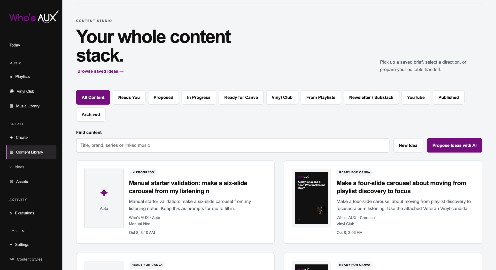
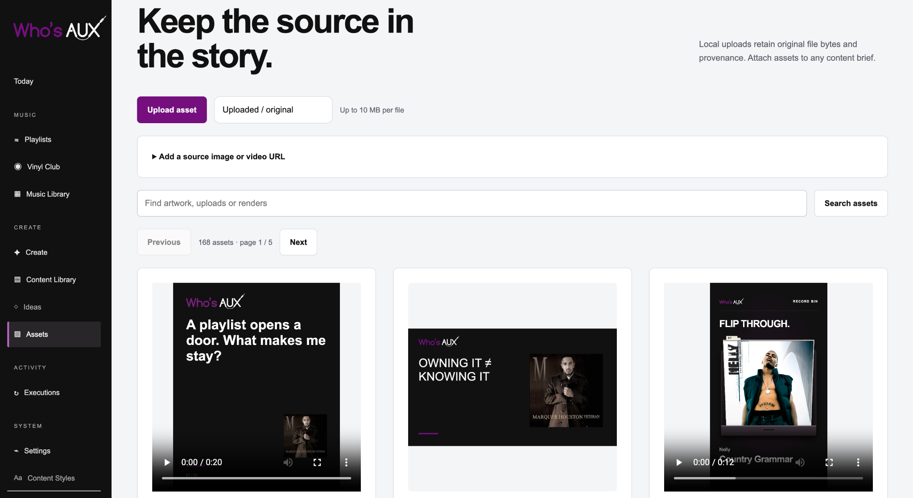
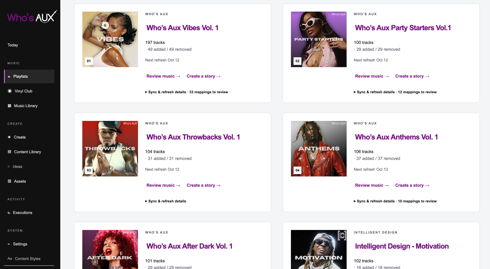
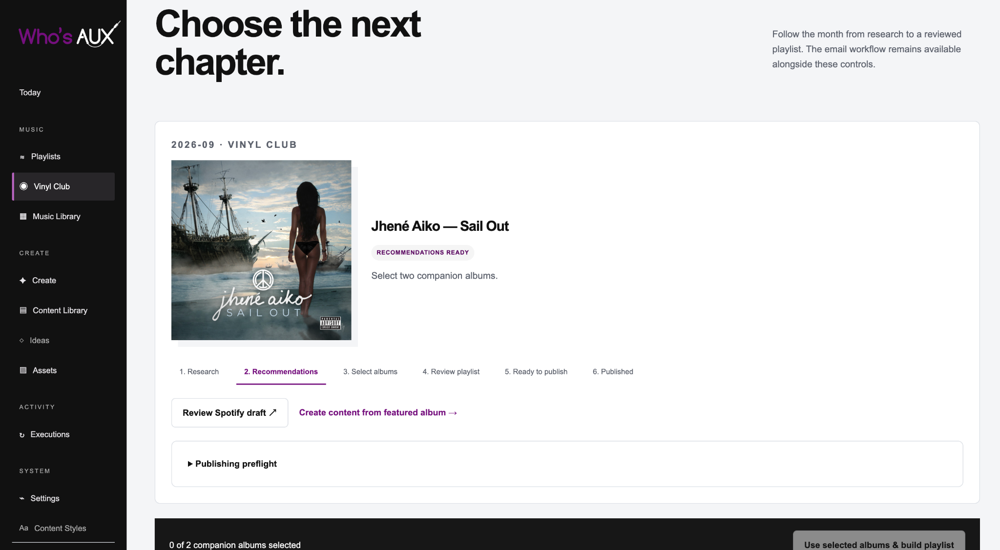

01 / Ingest
Pull in new candidates
Charts, seed playlists, and listening data provide new candidates.
I designed Music Ops to manage recurring music research, curation, and publishing across two brands. What began as playlist automation has grown into a dashboard that supports editorial decisions, Vinyl Club recommendations, and content production.
The scheduled system handles research, track selection, and maintenance. The dashboard gives that work a practical interface for review, approval, and producing related content.
THREE CONNECTED AREAS

The first goal was to reduce the repeated work behind themed playlists: finding candidates, checking identities, applying curation rules, and publishing updates on schedule.
Once that workflow was established, I reused the catalog for Vinyl Club research. As the work expanded, I added a dashboard for reviewing playlists, managing assets, and planning the content that comes from them.
The Assets view keeps uploads and finished media together, with their sources attached. That matters when a recommendation becomes a playlist, a video, or a brief someone else needs to pick up.

Five Who’s AUX playlists and four Intelligent Design playlists use the same catalog, with different curation rules and schedules. The runner collects candidates, checks identity and duplication, applies theme rules, and refreshes eligible playlists.
Manual edits remain part of the process. Changes are recorded and reconciled so a scheduled refresh does not undo an editorial decision.

The discovery process combines Apple Music charts and seed playlists with Last.fm, ListenBrainz, and existing observations. Spotify provides additional identity and playability checks. I also built two local MusicBrainz reference databases, approximately 42 GB combined, for faster artist and recording research.
I designed the working database to separate original source evidence from normalized music records and playlist state. That allows the team to reuse research without losing the basis for a recommendation.
track_sources and track_signals preserve source evidencemanual_playlist_events records human adds and removalsplaylist_observed_state tracks what is actually livevinyl_month_tracks stores the approved monthly state01 / Ingest
Charts, seed playlists, and listening data provide new candidates.
02 / Resolve
The system checks artist and recording identities, then caches the result for later runs.
03 / Refresh
Each playlist has its own age, theme, artist, and cooldown rules.
04 / Sync + reconcile
Eligible playlists are updated, and manual changes are recorded before the next run.
Vinyl Club uses the same research foundation for its monthly feature. An album link begins a process of discovery, companion recommendations, and a proposed playlist.
The final album selections and playlist remain subject to editorial approval. The dashboard tracks progress and makes the approved material available for related content planning.

01 / EMAIL
Start with a link Resend receives the message, posts it to a webhook, and writes the event to SQLite before processing.02 / RESEARCH
Resolve and recommend The anchor album is normalized, then local MusicBrainz data plus Apple, Last.fm, ListenBrainz, and selective Spotify checks build a shortlist.03 / PICK
Keep the decision human The editor selects two companion records. Spotify identities and track sets are frozen so the approved choice stays stable.04 / DRAFT
Build and review The playlist mixes representative tracks from the three records with discovery-first expansion, plus caps and quality checks.05 / PUBLISH
Ship and package Spotify publishes the draft, Apple publishes the confident subset, and a monthly content packet is generated from the final result.01 / Coverage
Nine playlists can follow different themes and schedules without needing nine separate tools.
02 / Efficiency
Track identities, source evidence, and prior decisions can be checked again instead of researched from scratch.
03 / Control
I still make the final selections and can override a recommendation.
04 / Reuse
The catalog also supports Vinyl Club picks, publishing, and content production.